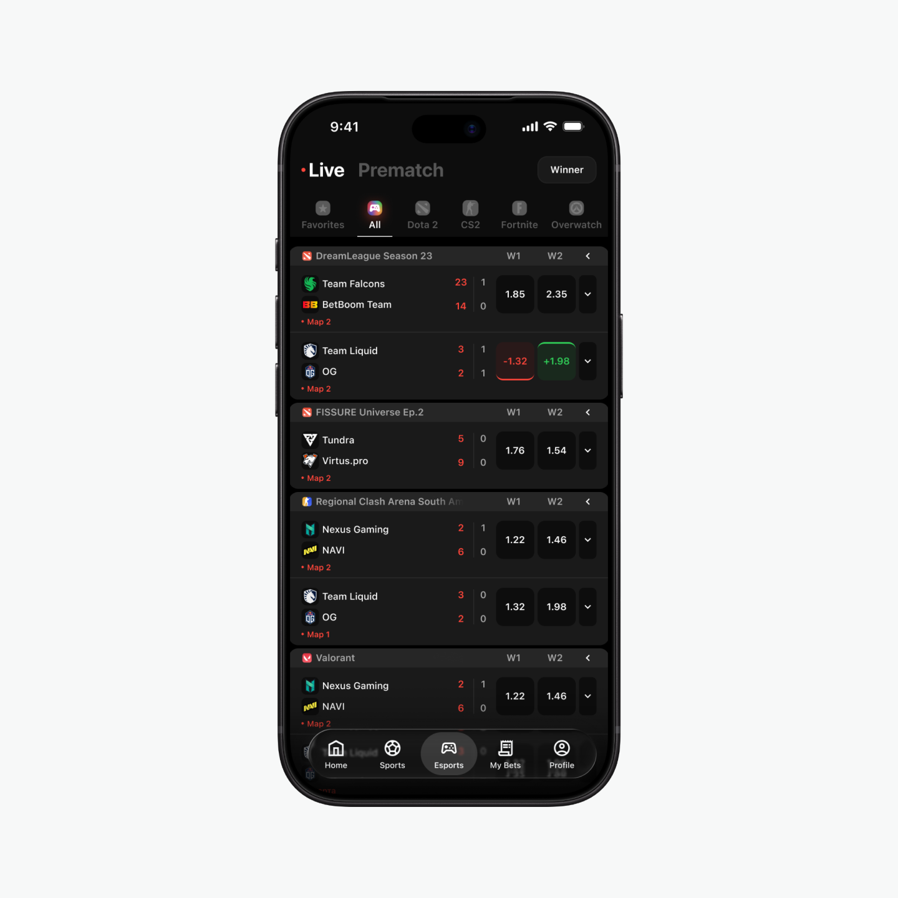

Mirzomansur Okhunov
Product Designer
T‑Bank debit card2026
T‑Bank credit ecosystem2025
ProFinansy2024
ZM-team
2023
Concept Freeze Card • T–Bank
Vibe-coded a card freeze interaction in SwiftUI, using a Metal shader to bring the state change to life with ice and falling snow — all in a couple of hours.
Hide Chats • Telegram
A small concept for Telegram: what if chats could be hidden behind a password?

Credit History • T–Bank
At T-Bank, I redesigned the credit score section — from problem analysis and concept development to design approval and handoff.

Pre-match page concept • Winline
For a Winline test assignment, I designed a pre-match esports concept — helping users find upcoming matches faster, compare odds more easily, and place bets with less friction.
Design system • pro.finansy
At pro.finansy, I initiated the design system and built a UI kit that aligned design and development, helping maintain a consistent visual and behavioral experience across the product.
The concept of choosing a coach • DDX Fitnes
For DDX Fitness, I designed a more visual and engaging trainer selection flow to keep users involved and help them complete the booking without dropping off.